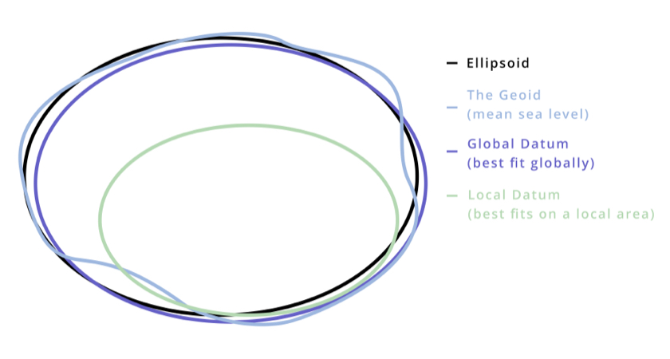
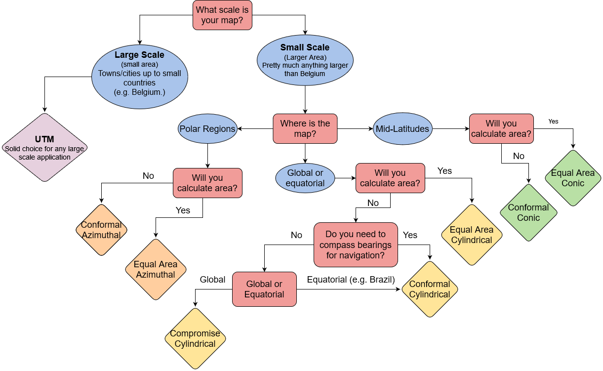

Coordinate Reference Systems
A Coordinate Reference System (CRS) is a coordinate-based system used to locate geographical entities. A CRS can be applied locally, regionally, or globally. A Cartesian grid (think graph paper) is a simple 2D coordinate reference system for referencing locations on the surface of a flat plane. A spherical coordinate system (think latitude/longitude) is a more complex 2D coordinate system for referencing locations on the surface of a sphere.

Learning Outcomes
This module is intended to give a broad overview of how we represent the 3D earth on 2D maps using coordinate reference systems. Some of the things you can expect from this module:
- Steps of Abstraction: 3D Earth >>> 2D Map
- Geoids
- Datums
- Local vs. Global
- Geographic Coordinate Systems
- Projected Coordinate Systems
- Types of Map Projections
- Map Scale
The Steps of Abstraction
The Earth is a lumpy ball of rock careening through space. It is far too complicated to represent fully; you can’t view more than half of the 3D earth at once when viewing it on a 2D plane. We need to create abstractions to simplify the shape of the earth so we can map it in 2D.
Projected Coordinate Systems
There are many different types of Map Projections. They are classified by how the are projected onto a surface and what kind of deformations they impose.
Additional Resources
Open Geomatics Textbook
Chapter 2 of this open source geomatics textbook gives an overview of how we create map projections, including different types of datums and an in depth explanation of what the geoid is. It is a bit beyond the scope of this course, and nothing from this book will be on the exam (unless it was covered elsewhere in lecture), but it can serve as a helpful resource for building your conceptual model.
Visualizing the Geoid
This tool allows you to explore a 3D model of the geoid and compare it to the more simplified spheroid. * Don’t get lost in the weeds trying to figure it out, but it could help refine your conceptual model.
More About Datums
DJI (the drone company) has put together a helpful resource on datums that can be found here

Choosing a Projection
Here is a simple summary to help you think though which class of map projection you might want to use. Categories in bold are the most common classes we use.
| Projection Category | Properties | Common Uses |
|---|---|---|
| Conformal | Preserves local shapes and angles | Topographic maps, navigation charts, weather maps |
| Equal Area | Preserves areas | Dot density maps, thematic maps |
| Equidistant | Preserves distance from one or two specified points to all other points on the map | Maps of airline distances, seismic maps showing distances from an earthquake epicenter |
| True Direction | All directions are true from a single specified point (usually the center) to all other points on the map | Navigation and route planning maps |
| Compromise | No point is completely distortion free; distortion is minimized near the center and along the equator | World maps |
Choosing a Projection: Flowchart
